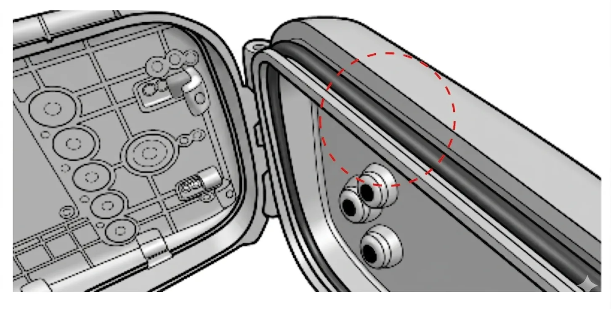
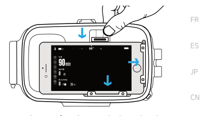
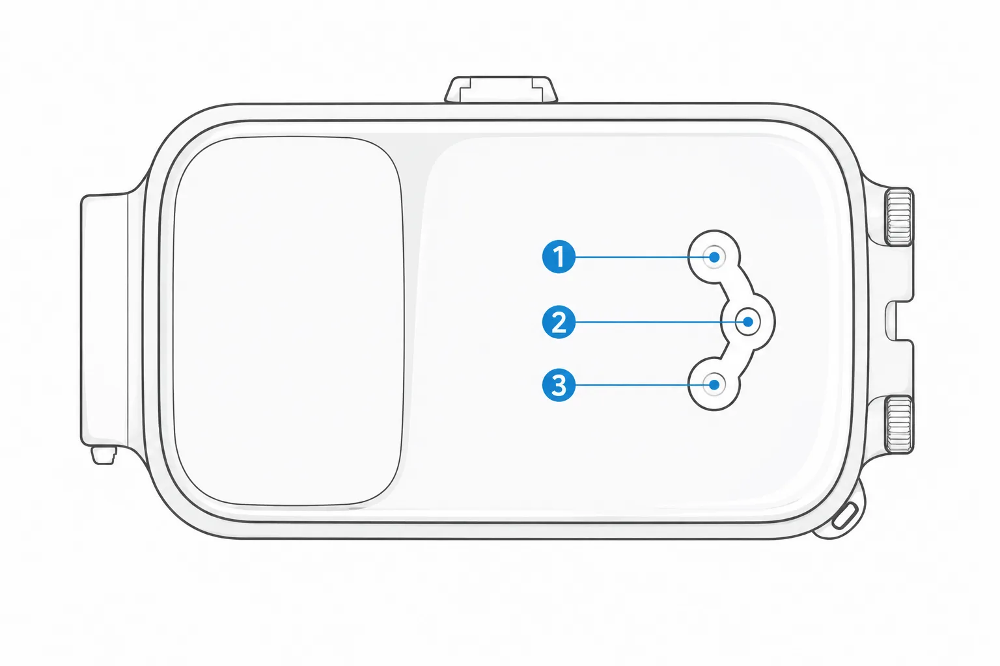
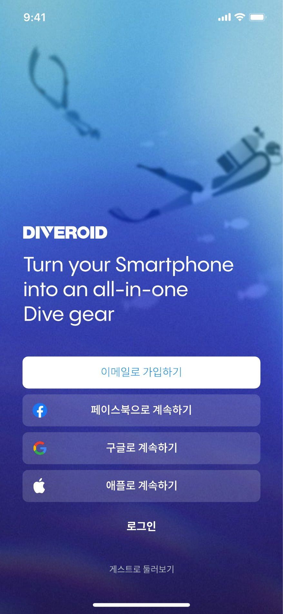
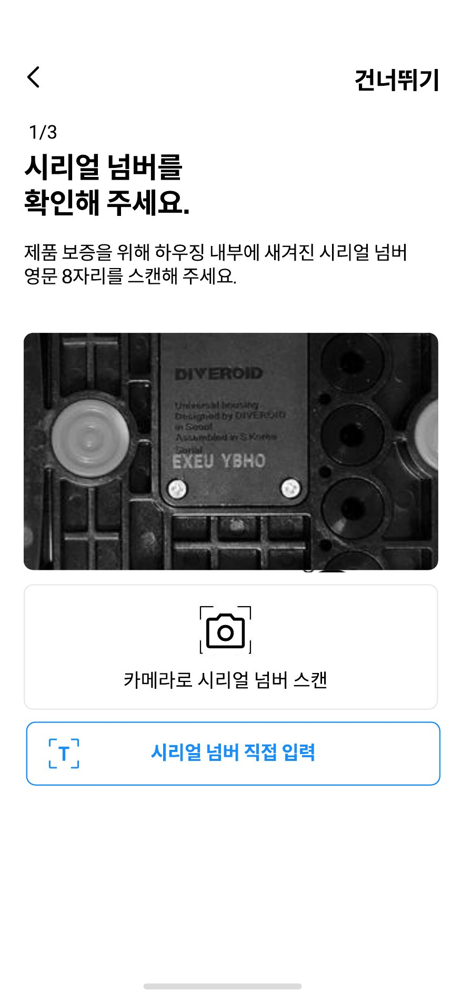
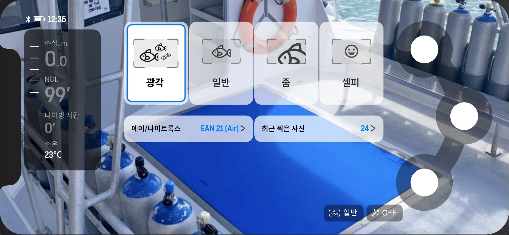
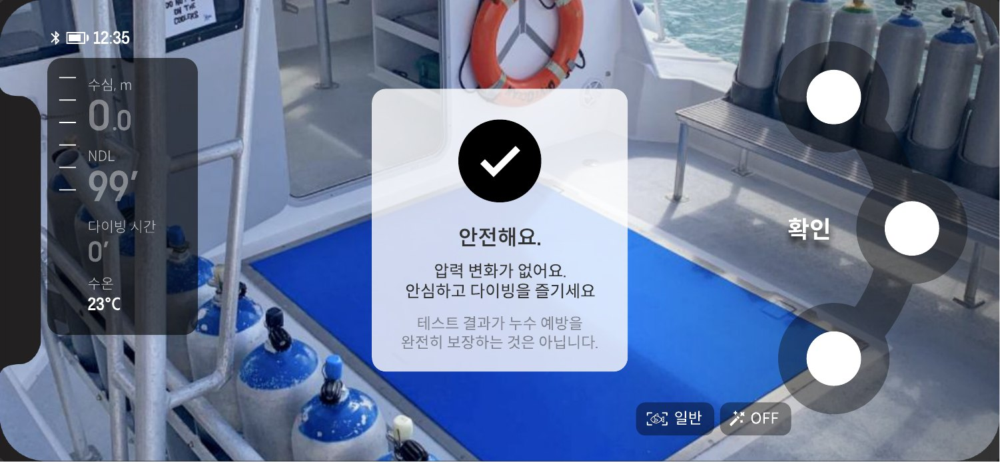
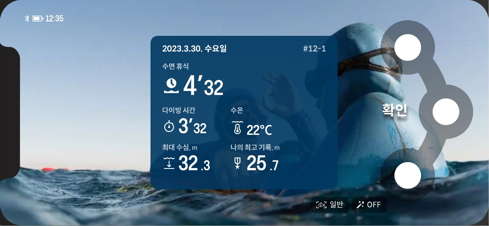

Download DIVEROID and sign up or sign in. On first use, register your housing as described in step 5 while the serial number inside is visible.
2
Check the O-Ring
Inspect the O-ring and its groove for debris, twists or gaps. Complete the manual’s empty-housing waterproof test before fitting your phone for the first time.

3
Insert Your Smartphone
Remove the phone case. Move the phone holder aside, seat the phone in the guides and let the holder grip it. Check the screen buttons and both camera windows.

4
Lock the Housing
Close the housing with the O-ring seated evenly. Turn the lock clockwise until it clicks.
5
Register Your Devices
Register the Universal Pro with the eight-character serial number inside the housing. If you use a Mini, register it separately through Bluetooth.
Chapter 2 — Underwater Photography
6
Open Camera Mode
Follow the pre-dive checks for your mode. In camera mode, press the top housing button briefly to open the lens menu.
7
Shoot Underwater
With the camera menu closed, briefly press the middle button to take a photo. Hold it to start or stop video recording.

Chapter 3 — Dive Log
8
Start a Dive Log
Follow the housing checks for your dive mode. Look for the ready screen before starting the dive. A connected Mini supplies depth and water temperature.
9
End Dive & Save Your Log
Review the summary when your dive ends. Open the dive in Logbook to review its photos or edit the log.
Chapter 4 — After Your Dive
10
Rinse with Fresh Water
After every saltwater dive, rinse the housing thoroughly with
fresh water while it is still closed. This removes salt deposits
and extends the life of the O-ring and seals.
11
Open, Dry & Store
Dry the closed housing first. Hold it upright as you open it and remove your phone. Let the housing dry before storing it out of direct sunlight.
Need more help?
1장 — 최초 설정
1
DIVEROID 앱 다운로드
DIVEROID 앱을 설치하고 가입하거나 로그인하세요. 처음 사용한다면 하우징 내부의 시리얼 번호가 보이는 상태에서 5단계에 따라 기기를 먼저 등록하세요.

2
O링 점검
O링과 홈에 이물질, 꼬임, 벌어진 틈이 없는지 확인하세요. 처음 스마트폰을 장착하기 전에 제품 설명서에 따라 빈 하우징으로 방수 테스트를 마치세요.
3
스마트폰 장착
스마트폰 케이스를 벗기세요. 폰 고정 장치를 밀어 스마트폰을 가이드 안에 끼운 다음 고정 장치를 놓으세요. 화면 위 버튼과 전면·후면 카메라의 위치를 확인하세요.
4
하우징 잠금
O링이 홈에 고르게 들어간 상태에서 하우징을 닫으세요. 딸깍 소리가 날 때까지 잠금장치를 시계 방향으로 돌리세요.
5
기기 등록
하우징 내부의 영문 여덟 글자 시리얼 번호로 유니버셜 프로를 등록하세요. 미니를 사용한다면 블루투스로 별도 등록하세요.

2장 — 수중 촬영
6
카메라 모드 실행
선택한 다이빙 모드의 준비 단계를 따르세요. 카메라 모드에서 하우징의 위쪽 버튼을 짧게 누르면 렌즈 메뉴가 열립니다.

7
수중 촬영
카메라 메뉴를 닫은 상태에서 가운데 버튼을 짧게 누르면 사진이 촬영됩니다. 길게 누르면 동영상 촬영을 시작하거나 멈출 수 있습니다.
3장 — 다이브 로그
8
다이브 로그 시작
선택한 다이빙 모드의 안내에 따라 하우징을 확인하세요. 준비 완료 화면을 확인한 후 다이빙을 시작하세요. 미니를 연결하면 수심과 수온이 기록됩니다.

9
다이브 종료 & 로그 저장
다이빙이 끝나면 요약 화면에서 기록을 확인하세요. 로그북에서 해당 다이빙을 열어 사진을 보거나 기록을 수정할 수 있습니다.

4장 — 다이빙 후 관리
10
민물로 헹구기
바다에서 다이빙 후에는 하우징을 닫은 상태로 민물로 충분히
헹궈주세요. 염분을 제거하여 O링과 씰의 수명을 연장합니다.
11
건조 & 보관
하우징을 닫은 상태로 겉면을 먼저 말리세요. 세운 상태에서 열고 스마트폰을 꺼내세요. 하우징을 말린 뒤 직사광선을 피해 보관하세요.